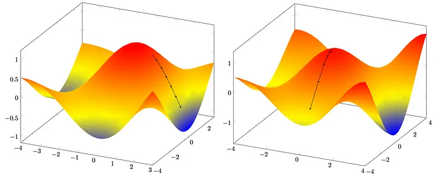
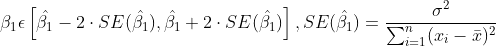
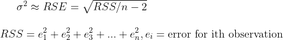
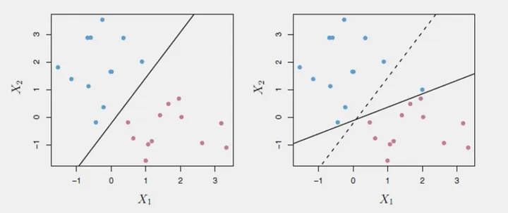
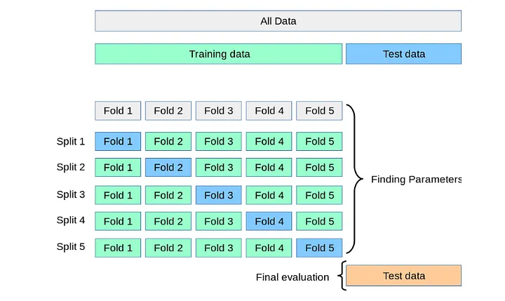
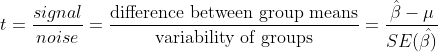
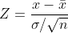
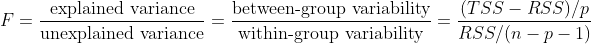
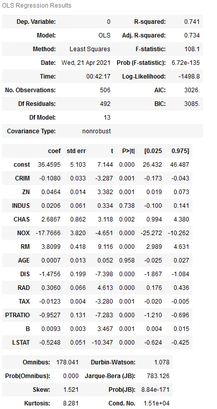

__ __ __ __ ___ __ __
/ / / /___ ____/ /__ __________/ /_____ _____ ____/ (_)___ ____ _ / /_/ /_ ___
/ / / / __ \/ __ / _ \/ ___/ ___/ __/ __ `/ __ \/ __ / / __ \/ __ `/ / __/ __ \/ _ \
/ /_/ / / / / /_/ / __/ / (__ ) /_/ /_/ / / / / /_/ / / / / / /_/ / / /_/ / / / __/
\____/_/ /_/\__,_/\___/_/ /____/\__/\__,_/_/ /_/\__,_/_/_/ /_/\__, / \__/_/ /_/\___/
____ __ ____ ____ _/____/
/ __ \____ / /__ ____ / __/ / __ \____ _____ ____/ /___ ____ ___ ____ ___ __________
/ /_/ / __ \/ / _ \ / __ \/ /_ / /_/ / __ `/ __ \/ __ / __ \/ __ `__ \/ __ \/ _ \/ ___/ ___/
/ _, _/ /_/ / / __/ / /_/ / __/ / _, _/ /_/ / / / / /_/ / /_/ / / / / / / / / / __(__ |__ )
/_/ |_|\____/_/\___/__ \____/_/ __/_/ |_|\__,_/_/ /_/\__,_/\____/_/ /_/ /_/_/ /_/\___/____/____/
(_)___ / |/ /___ ______/ /_ (_)___ ___ / / ___ ____ __________ (_)___ ____ _
/ / __ \ / /|_/ / __ `/ ___/ __ \/ / __ \/ _ \ / / / _ \/ __ `/ ___/ __ \/ / __ \/ __ `/
/ / / / / / / / / /_/ / /__/ / / / / / / / __/ / /___/ __/ /_/ / / / / / / / / / / /_/ /
/_/_/ /_/ /_/ /_/\__,_/\___/_/ /_/_/_/ /_/\___/ /_____/\___/\__,_/_/ /_/ /_/_/_/ /_/\__, /
/____/
>> Pretty version
==========================================================================================================================
Imagine you are new to Machine Learning and you have made your first ML model using Linear Regression. You check
the R2 score and get disappointed with the results. Yet you You decided to re-train the model thinking that it's
impossible to achieve such a bad R2 Score with the recently trained model and see your R2 score jump as much as
5-10%. What did just happen? If you are like me, you would keep on running the code until you stumble upon the
max R2 score and then show off your shiny new model to your peers. What you just experienced is one of many ways
where randomness affects how your models function.
Let's delve a little deeper and understand how we can use randomness to our advantage.
++++++++++++++++++++++++++++++++++++++++++++++++++++++++++++++++++++++++++++++++++++++++++++++++++++++++++++++++++++++++++
Randomness in Computers
Computers are not able to generate truly random numbers as it is fundamentally impossible to produce truly random numbers
on any deterministic device. So how do we encounter randomness in our models and how are we able to get random numbers by
calling the random module? The answer to this question is given by the terms Noise and seeds.
Noise
Noise is any unwanted interference or corruption that distorts the original signal. To put it simply, they are the outcome
of various Electromagnetic and quantum processes which are out of bounds for this blog!
Try clicking a picture in a dark environment and you might notice some grey blobs scattered around the picture. That is
nothing but noise! They are much more prevalent in low light photos as the minuscule fluctuations are a considerable change
to #000000(Black) but not to some higher hex valued colour.
The darker the picture, the more is the impact of noise in it
Surprisingly, noise is not the culprit to the variability we encounter.
Seed
Most random numbers generated by the computer are generated using a pseudorandom number generator or PNRG for short. Random
module in python uses a PNRG algorithm to get you random numbers, but there is a reason why they are called pseudorandom. The
randomness can be replicated by feeding in the seed for the algorithm.
Watch this brilliant video by Khan Academy to understand how PNRGs
works and why they fall short in comparison to real random numbers
A seed or a random state is the starting point for the PNRG algorithm to start generating pseudorandom numbers recursively.
Python's random module uses the Mersenne Twister PRNG algorithm as its core generator.
This repeatability is not safe as it might endanger encryption or two-factor authentication. A safer alternative to PNRG is
a cryptographically secure pseudorandom number generator (CSPRNG). They are slower than PRNG but provide seemingly 'more random'
numbers. A popular example of this would be the inbuilt secrets module in Python.
When the seed is not provided manually, some value of noise is taken as the seed by the generator, which is the reason we see
different values every time we execute a random generator.
++++++++++++++++++++++++++++++++++++++++++++++++++++++++++++++++++++++
Why does it matter?
This variation can have some unintended consequences on your machine learning experience. Many popular models like KNN and SVM start
'randomly' and then slowly reduce their errors. Algorithms like Gradient Descent also work by starting at a random point on the
features and then working their way up towards higher accuracy. The starting point of the algorithm plays a very important role in
the outcome of the model's fit. Let us have a look at some examples.
Linear and Logistic Regression
Linear and Logistic Regression use Gradient Descent to find the values of slopes and intercept such that the cost function is
minimized. It starts at a random point and descends towards the local, or sometimes the global minimum of the cost function. The big
problem with this algorithm is that the minimum chosen in the end completely depends on the starting point of the descent. It might fit
the model for a local minimum which is considerably larger in value than the global minimum or other local minima.

We can solve this problem easily by converting the function into a convex function by applying convex optimization. Also, it is known
that if the actual value of slope given by the global minimum is β₁, then there is a 95% chance that β₁ lies in the given region.

If you are wondering where the 95% chance comes from, the values for β1
are in a Gaussian distribution where the value of μ is ^β1 and σ is SE(^β1),
where ^β1 is the estimator of a parameter.

Variance is approximately calculated as RSE (Residual Standard Error) by
using RSS (Residual Sum of Squares). The values of RSS and SE will come
in handy later!
Decision Trees
Decision Trees on their own cannot provide very accurate results and are prone to over-fitting if not pruned correctly. Ensemble techniques
like bagging and random forest reduce this by a process called Bootstrapping. Bootstrapping works by randomly selecting observations from
our data and creating multiple samples from it. Some observations may occur more than once due to random selection. By letting the trees
grow, we make sure that the trees have high variance but low bias. By taking the average through aggregation, the variance can be reduced
as well, giving us better results.
SVM
SVM and other Maximum Margin Classifiers like it can be highly susceptible to change in their train data. Just by adding a single point to
the data (try to spot the difference) we get a completely different classification!

Have a look at this simulation by Stanford to understand how your SVM models get affected by the random state of the model. Feel free to tinker
with the parameters and gain an understanding of them.
++++++++++++++++++++++++++++++++++++++++++++++++++++++++++++++++++++++
How do we minimize its influence?
Now that we understand how randomness can influence our models, we may now look at some ways that we can curb its influence and get more concrete
results that better demonstrate the results of our data cleaning and model fitting process. Let us initialize with the datasets first. We will
be using the statsmodels module in python to make our Linear Regression Model and the mlbench package in R to get the Boston Housing dataset in
order to easily get the needed statistics for the same data.
import pandas as pd
import numpy as np
from sklearn import datasets
import statsmodels.api as sn
df = (datasets.load_boston())
dfx = pd.DataFrame(df.data, columns = df.feature_names)
y = pd.DataFrame(df.target)
X = sn.add_constant(dfx)
Setting up the data in python
library('mlbench')
data("BostonHousing")
data = BostonHousing
Setting up the data in R
Manual Seed Imputation
A common mistake that beginners do is that they do not manually set the value of the seed while coding. Manual imputation makes sure that your
results can be replicated by others and you can be sure that the increase or decrease in accuracy is the result of data cleaning and not the change
in the random state of the generator. One might get tempted to do some seed optimization, that is, find the value of seed that gives the highest
accuracy on the model. This practice doesn't hold well during real-world applications as it might cause over-fitting and a waste of time and resources.
It is best to manually select a few values and stick with the one that gets you the best result out of the bunch instead of iterating to find the
absolute best seed value. It can be done simply by the following line of code in python and R respectively.
np.random.seed(4742069)#python code
set.seed(4742069)#R code
Cross Validation
A great way to make sure that you are minimizing the variance caused by the starting point of the algorithm is by cross-validating your data. In
Cross-validation, you split your data into n parts and run n experiments, taking each part one by one for testing your data while the rest is used
to train the model.

The final model can be either the average or the best performing of all the experiments.
Statistical Tests
Student's t-test
This test is based upon the value of t-statistic which was developed by William Sealy Gosset and is given by

# Gosset worked at the beer manufacturing company, Guinness. Company policy at Guinness forbade its chemists from publishing their
# findings, so Gosset published his statistical work under the pseudonym “Student” as he developed this test while he was on study
# leave given by Guinness.
It is assumed that the distribution of the sample roughly follows a normal distribution, has similar variance and the same sample size. The t-statistic
is then compared to a table which determines P(>|t|) i.e. the probability that the relationship that the model arrived at is because of an actual
relation between the two and not just chance due to some noise making it seem like there is a relation. Generally in science, the value of P(>|t|)
should be less than or equal to 5%. This test should only be performed when the sample size is less than 30. Z-test is preferred for samples with more
than 30 observations.
Z-test
This is given by

Just like the t-test, we find P(>|Z|) from a table for Z - statistic. We must keep in mind that Z-test is performed on population parameters. If
population parameters are missing, then sample parameters can be used but Student's test is recommended for the sample data.
F-test
When there are a lot of features, the probability of a feature showing wrongful correlation must be known too to get a better view of our model.
To tackle this problem, we use a metric called F - statistic which is given by

TSS stands for Total Sum of Squares, p is the number of features and n is the number of elements in the data
To understand its significance, let us look at an example. Suppose we set up an experiment to find if a given coin is biased or not. A coin is
said to be biased if it shows heads all the five times we toss it. The probability of falsely classifying a fair coin as biased will be (1/2)⁵ ≈ 3%.
If we repeat this same experiment 100 times then the probability of falsely classifying at least one fair coin as biased will be 1-(1-1/2⁵)¹⁰⁰ ≈ 95%,
which means it is almost certain that we will wrongly classify a fair coin as biased.
Even if you don't understand the concept of such statistical tests, the important thing to take away here is that the value of P-values for these
tests must be less than the threshold value, that is 0.05 or 5% for scientific purposes.
To get these tests, we just have to write the following lines of code. The statsmodels library makes it very simple to get these tests as they are
displayed in the model summary itself.
model = sn.OLS(y, X).fit()
model.summary()
Fitting the model and getting statistical tests on it in python
model = lm(medv ~ ., data = data)
summary(model)
Fitting the model and getting statistical tests on it in R

Here are the results! Below are the notes left by the statsmodels library.
# Notes:
# [1] Standard Errors assume that the covariance matrix of the errors is correctly specified.
# [2] The condition number is large, 1.51e+04. This might indicate that there are
# strong multi-collinearity or other numerical problems.
As we can see, the value of t-statistic and P-value is given for each estimator and compare if they are actually in correlation or not. Since the
P-value for F-statistic is below the threshold, we can confidently say that no estimator has been falsely labelled.
++++++++++++++++++++++++++++++++++++++++++++++++++++++++++++++++++++++
Conclusion
We learnt where the randomness in computers comes from and how it can be not so random. We saw some examples where we see the influence of the random
state on popular models and learnt how to minimize it.
I hope you had a fun time reading my blog. Uncertainty can be a boon or a bane, it is up to you to tame the beast and put it to good use.